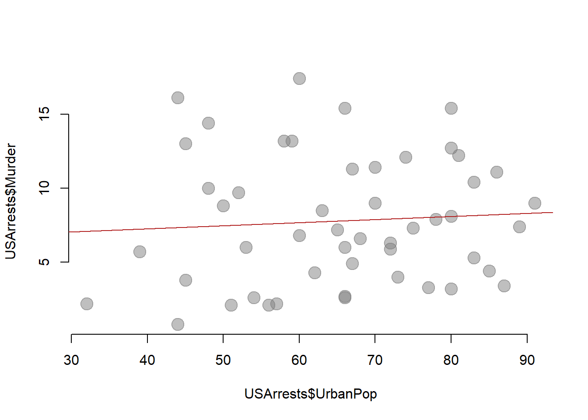

dir()2 Introduction to R
This lecture introduces you to basic operations when you first start using R such as navigation, the object-oriented framework, loading a package, and creating some data vectors.
2.2 Commenting Code
Most computer languages have a special character that is used to “comment out” lines so that it is not run by the program. It is used for two important purposes. First, we can add text to document our functions and it will not interfere with the program. And two, we can use it to run a program while ignoring some of the code, often for debugging purposes.
The # hash tag is used for comments in R.
##==============================================
##
## Here is some documentation for this script
##
##==============================================
x <- 1:10
sum( x )[1] 55# y <- 1:25 # not run
# sum( y ) # not run2.3 Help
You will use the help functions frequently to figure out what arguments and values are needed for specific functions. Because R is very customizable, you will find that many functions have several or dozens of arguments, and it is difficult to remember the correct syntax and values. But don’t worry, to look them up all you need is the function name and a call for help:
help( dotchart ) # opens an external helpfile
If you just need to remind yourself which arguments are defined in a function, you can use the args() command:
args( dotchart )function (x, labels = NULL, groups = NULL, gdata = NULL, offset = 1/8,
ann = par("ann"), xaxt = par("xaxt"), frame.plot = TRUE,
log = "", cex = par("cex"), pt.cex = cex, pch = 21, gpch = 21,
bg = par("bg"), color = par("fg"), gcolor = par("fg"), lcolor = "gray",
xlim = range(x[is.finite(x)]), main = NULL, xlab = NULL,
ylab = NULL, ...)
NULLIf you can’t recall a function name, you can list all of the functions from a specific package as follows:
help( package=“stats” ) # lists all functions in stats package
2.4 Install Programs (packages)
When you open R by default it will launch a core set of programs, called “packages” in R speak, that are use for most data operations. To see which packages are currently active use the search() function.
search()[1] ".GlobalEnv" "package:stats" "package:graphics"
[4] "package:grDevices" "package:utils" "package:datasets"
[7] "package:methods" "Autoloads" "package:base" These programs manage the basic data operations, run the core graphics engine, and give you basic statistical methods.
The real magic for R comes from the over 7,000 contributed packages available on the CRAN: https://cran.r-project.org/web/views/
A package consists of custom functions and datasets that are generated by users. They are packaged together so that they can be shared with others. A package also includes documentation that describes each function, defines all of the arguments, and documents any datasets that are included.
If you know a package name, it is easy to install. In R Studio you can select Tools -> Install Packages and a list of available packages will be generated. But it is easier to use the install.packages() command. We will use the Lahman Package in this course, so let’s install that now.
Description This package provides the tables from Sean Lahman’s Baseball Database as a set of R data.frames. It uses the data on pitching, hitting and fielding performance and other tables from 1871 through 2013, as recorded in the 2014 version of the database.
See the documentation here: https://cran.r-project.org/web/packages/Lahman/Lahman.pdf
install.packages( "Lahman" )You will be asked to select a “mirror”. In R speak this just means the server from which you will download the package (choose anything nearby). R is a community of developers and universities that create code and maintain the infrastructure. A couple of dozen universities around the world host servers that contain copies of the R packages so that they can be easily accessed everywhere.
If the package is successfully installed you will get a message similar to this:
package ‘Lahman’ successfully unpacked and MD5 sums checked
Once a new program is installed you can now open (“load” in R speak) the package using the library() command:
library( "Lahman" )If you now type search() you can see that Lahman has been added to the list of active programs. We can now access all of the functions and data that are available in the Lahman package.
2.5 Accessing Built-In Datasets in R
One nice feature of R is that is comes with a bunch of built-in datasets that have been contributed by users are are loaded automatically. You can see the list of available datasets by typing:
data()This will list all of the default datasets in core R packages. If you want to see all of the datasets available in installed packages as well use:
data( package = .packages(all.available = TRUE) )2.5.1 Basic Data Operations
Let’s ignore the underlying data structure right now and look at some ways that we might interact with data.
We will use the USArrests dataset available in the core files.
To access the data we need to load it into working memory. Anything that is active in R will be listed in the environment, which you can check using the ls() command. We will load the dataset using the data() command.
remove( list=ls() )ls() # nothing currently availablecharacter(0)data( "USArrests" )
ls() # data is now available for use[1] "USArrests"Now that we have loaded a dataset, we can start to access the variables and analyze relationships. Let’s get to know our dataset.
names( USArrests ) # which variables are in the dataset?[1] "Murder" "Assault" "UrbanPop" "Rape" nrow( USArrests ) # how many observations are there?[1] 50dim( USArrests ) # a quick way to see rows and columns[1] 50 4# observation labels (row names) in our data:
row.names( USArrests ) |> head() [1] "Alabama" "Alaska" "Arizona" "Arkansas" "California"
[6] "Colorado" # summary statistics for each variable
summary( USArrests ) |> pander::pander()| Murder | Assault | UrbanPop | Rape |
|---|---|---|---|
| Min. : 0.800 | Min. : 45.0 | Min. :32.00 | Min. : 7.30 |
| 1st Qu.: 4.075 | 1st Qu.:109.0 | 1st Qu.:54.50 | 1st Qu.:15.07 |
| Median : 7.250 | Median :159.0 | Median :66.00 | Median :20.10 |
| Mean : 7.788 | Mean :170.8 | Mean :65.54 | Mean :21.23 |
| 3rd Qu.:11.250 | 3rd Qu.:249.0 | 3rd Qu.:77.75 | 3rd Qu.:26.18 |
| Max. :17.400 | Max. :337.0 | Max. :91.00 | Max. :46.00 |
We can see that the dataset consists of four variables: Murder, Assault, UrbanPop, and Rape. We also see that our unit of analysis is the state. But where does the data come from, and how are these variables measured?
To see the documentation for a specific dataset you will need to use the help() function:
help( "USArrests" )We get valuable information about the source and metrics:
Description This data set contains statistics, in arrests per 100,000 residents for assault, murder, and rape in each of the 50 US states in 1973. Also given is the percent of the population living in urban areas.
Format A data frame with 50 observations on 4 variables.
- Murder: numeric Murder arrests (per 100,000)
- Assault: numeric Assault arrests (per 100,000)
- UrbanPop: numeric Percent urban population
- Rape: numeric Rape arrests (per 100,000)
To access a specific variable inside of a dataset, you will use the $ operator between the dataset name and the variable name:
summary( USArrests$Murder )
summary( USArrests$Assault ) | Min. | 1st Qu. | Median | Mean | 3rd Qu. | Max. |
|---|---|---|---|---|---|
| 0.8 | 4.075 | 7.25 | 7.788 | 11.25 | 17.4 |
| Min. | 1st Qu. | Median | Mean | 3rd Qu. | Max. |
|---|---|---|---|---|---|
| 45 | 109 | 159 | 170.8 | 249 | 337 |
Is there a relationship between urban density and crime?
plot( USArrests$UrbanPop, USArrests$Murder,
frame.plot=F, pch=19, cex=2,
col=gray( level=0.5, alpha=0.5 ) )
abline( lm( USArrests$Murder ~ USArrests$UrbanPop ), col="firebrick" )
2.5.2 Using the Lahman Data
Let’s take a look at some of the data available in the Lahman package.
data( package = "Lahman" ) # All datasets in package "Lahman":| DATASET NAME | DESCRIPTION |
|---|---|
| AllstarFull | AllstarFull table |
| Appearances | Appearances table |
| AwardsManagers | AwardsManagers table |
| AwardsPlayers | AwardsPlayers table |
| AwardsShareManagers | AwardsShareManagers table |
| AwardsSharePlayers | AwardsSharePlayers table |
| Batting | Batting table |
| BattingPost | BattingPost table |
| CollegePlaying | CollegePlaying table |
| Fielding | Fielding table |
| FieldingOF | FieldingOF table |
| FieldingOFsplit | FieldingOFsplit table |
| FieldingPost | FieldingPost data |
| HallOfFame | Hall of Fame Voting Data |
| HomeGames | HomeGames table |
| LahmanData | Lahman Datasets |
| Managers | Managers table |
| ManagersHalf | ManagersHalf table |
| Parks | Parks table |
| People | People table |
| Pitching | Pitching table |
| PitchingPost | PitchingPost table |
| Salaries | Salaries table |
| Schools | Schools table |
| SeriesPost | SeriesPost table |
| Teams | Teams table |
| TeamsFranchises | TeamFranchises table |
| TeamsHalf | TeamsHalf table |
| battingLabels | Variable Labels |
| fieldingLabels | Variable Labels |
| pitchingLabels | Variable Labels |
We see that we have lots of datasets to choose from here. I will use the People dataset, which is a list of all of the Major League Baseball players over the past century and their personal information.
library( Lahman ) # loads Lahman package
data( People ) # loads the People dataset from Lahman
head( People ) # preview datasetHere are some common functions for exploring datasets:
names( People ) # variable names
nrow( People ) # number of players (rows) in dataset
summary( People ) # descriptive statistics for each variableWe can use help(People) to get information about the dataset, including a data dictionary.
help( People ) # players datasetStart helpfile:
People table
Description
People table - Player names, DOB, and biographical info. This file is to be used to get details about players listed in the Batting, Pitching, and other files where players are identified only by playerID.
Usage
data(People)Format
A data frame with 20370 observations on the following 26 variables.
-
playerID -
A unique code assigned to each player. The
playerIDlinks the data in this file with records on players in the other files. -
birthYear -
Year player was born
-
birthMonth -
Month player was born
-
birthDay -
Day player was born
-
birthCountry -
Country where player was born
-
birthState -
State where player was born
-
birthCity -
City where player was born
-
deathYear -
Year player died
-
deathMonth -
Month player died
-
deathDay -
Day player died
-
deathCountry -
Country where player died
-
deathState -
State where player died
-
deathCity -
City where player died
-
nameFirst -
Player’s first name
-
nameLast -
Player’s last name
-
nameGiven -
Player’s given name (typically first and middle)
-
weight -
Player’s weight in pounds
-
height -
Player’s height in inches
-
bats -
a factor: Player’s batting hand (left (L), right (R), or both (B))
-
throws -
a factor: Player’s throwing hand (left(L) or right(R))
-
debut -
Date that player made first major league appearance
-
finalGame -
Date that player made first major league appearance (blank if still active)
-
retroID -
ID used by retrosheet, https://www.retrosheet.org/
-
bbrefID -
ID used by Baseball Reference website, https://www.baseball-reference.com/
-
birthDate -
Player’s birthdate, in
as.Dateformat -
deathDate -
Player’s deathdate, in
as.Dateformat
Details
debut, finalGame were converted from character strings with as.Date.
Source
Lahman, S. (2023) Lahman’s Baseball Database, 1871-2022, 2022 version, https://www.seanlahman.com/baseball-archive/statistics/
Examples
data(People); data(Batting)
## add player's name to Batting data
People$name <- paste(People$nameFirst, People$nameLast, sep=" ")
batting <- merge(Batting,
People[,c("playerID","name")],
by="playerID", all.x=TRUE)
## batting and throwing
# right-handed batters are much less ambidexterous in throwing than left-handed batters
# (should only include batters)
BT <- with(People, table(bats, throws))
require(vcd)
structable(BT)
mosaic(BT, shade=TRUE)
## Who is Shoeless Joe Jackson?
subset(People, nameLast=="Jackson" & nameFirst=="Joe")
subset(People, nameLast=="Jackson" & nameFirst=="Shoeless Joe")
joeID <-c(subset(People, nameLast=="Jackson" & nameFirst=="Shoeless Joe")["playerID"])
subset(Batting, playerID==joeID)
subset(Fielding, playerID==joeID)
End helpfile